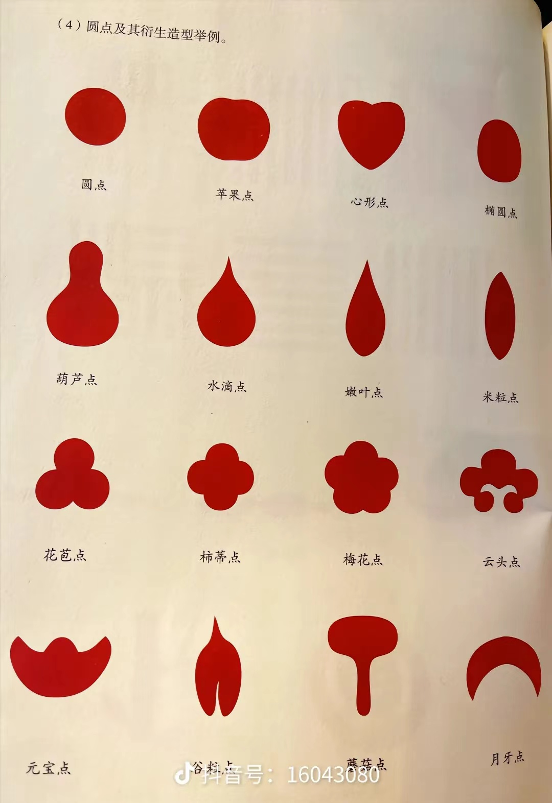
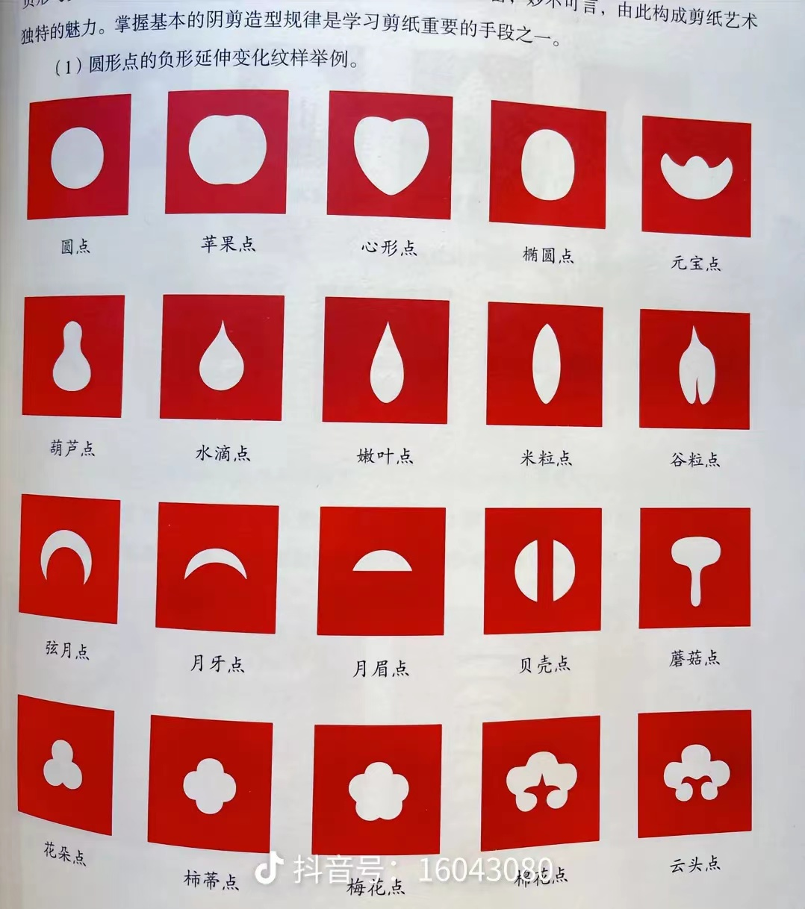
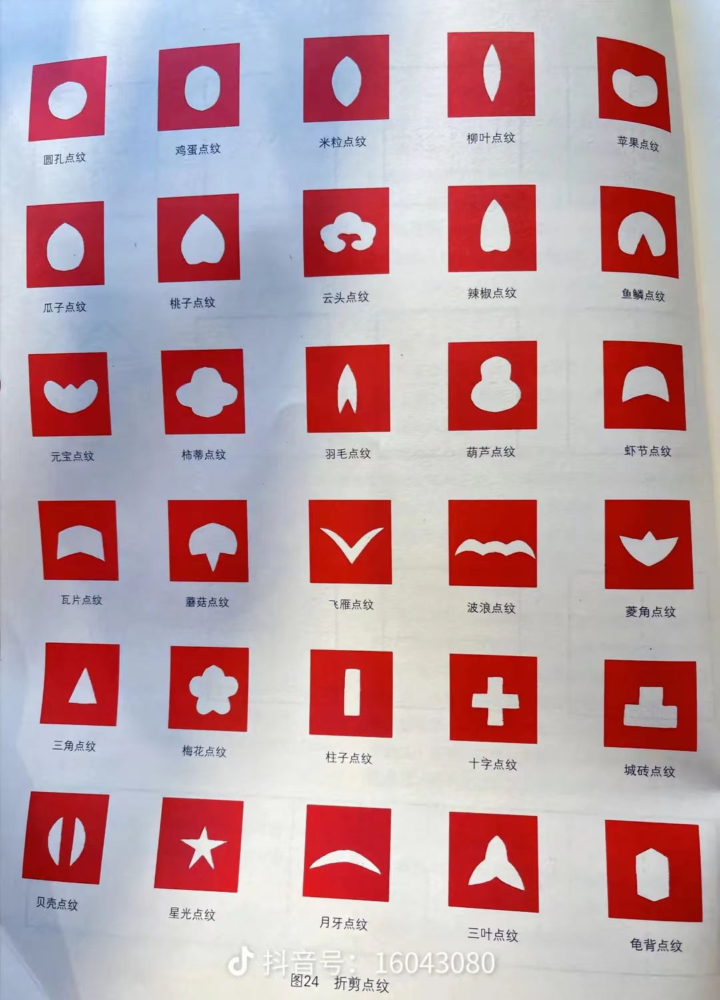
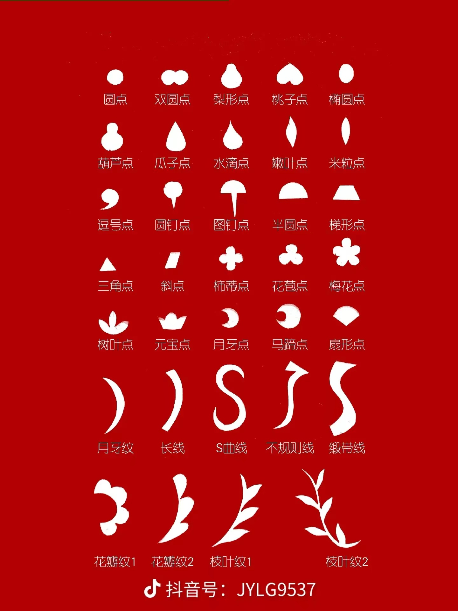

基础图形剪纸教程
学习剪纸中最基本的图形，为进阶创作打下基础。
准备工作
🔍 选择纸张
建议使用红色宣纸，大小约15×15厘米
✂️ 准备工具
小号剪刀、铅笔、橡皮
📏 辅助工具
直尺、圆规（可选）
基础图形练习
圆形
- 将纸对折成四等分
- 在折角处画出四分之一圆
- 沿线剪出，展开即为圆形
正方形
- 将纸对折成长方形
- 再次对折成正方形
- 按对角线剪出，展开即可
三角形
- 将纸对折
- 从折边画出等腰三角形
- 剪出展开即为等边三角形
基础图形示例

通过多层同心圆的组合，展现出层次感和韵律美。左图为实物效果，右图为图形分析。

嵌套方形与十字线条的结合，体现几何美感。左图为实物效果，右图为图形分析。

嵌套三角形的变化，展现动态美感。左图为实物效果，右图为图形分析。
组合图形示例

流畅的曲线勾勒出祥云图案，寓意吉祥如意。左图为实物效果，右图为图形分析。
注意事项
- 剪纸时保持剪刀与纸面垂直
- 剪切时动作要轻柔，避免用力过猛
- 复杂图形可以先用铅笔轻轻画出轮廓
- 练习时可以从大图形开始，逐渐过渡到小图形
练习建议
🔄 重复练习
每个基础图形重复练习3-5次，直到掌握要领
📏 保持对称
注意图形的对称性，这是剪纸艺术的基础
📝 记录进步
建议保留每次练习的作品，观察进步情况